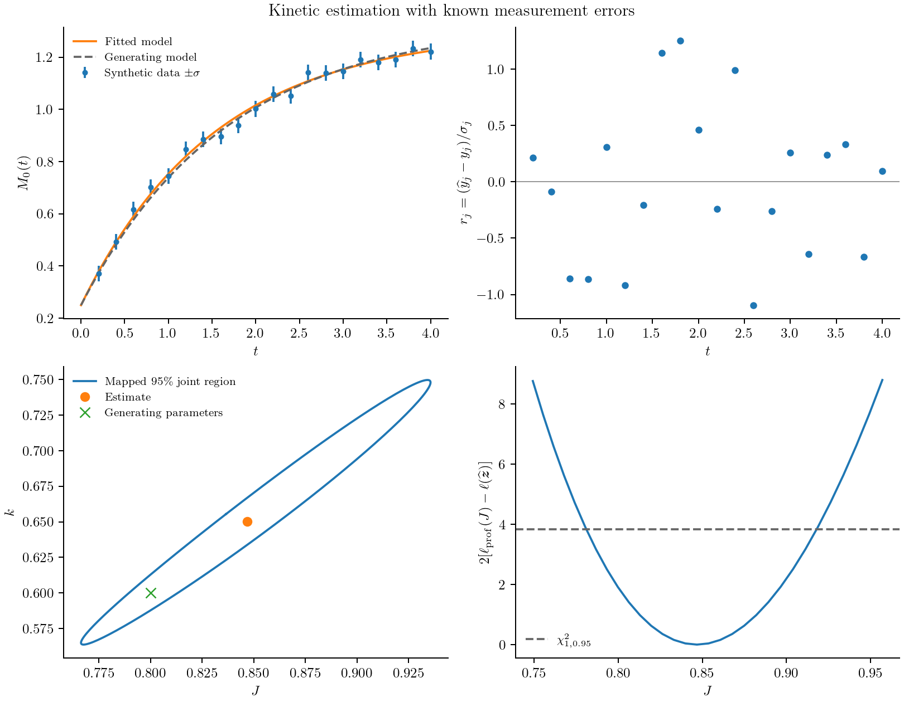

Observations and parameter estimation
A particle counter, a concentration measurement, and a scattering instrument observe different features of a population. Before fitting kinetics, specify how a model state becomes the reported measurement. Otherwise a change in observation weighting can be mistaken for a change in the physical rate law.
Fit a removal rate from number measurements
For size-independent removal,
\[\frac{\partial n(v,t)}{\partial t}=-k n(v,t),\qquad \frac{dM_0(t)}{dt}=-kM_0(t).\]
We can generate synthetic observations from the analytical solution, independently of the numerical solver used in fitting:
using PopulationBalanceModels
grid = Grid1D(range(0,8;length=41))
model = PBMModel(loss=Death(rate=(v,p,t,ctx)->p.k))
operator = compile(model,grid)
initial = exp.(-grid.centers).*grid.widths
problem = PBMProblem(operator,initial,(0.0,2.0);p=(k=0.4,))
times = [0.0,0.2,0.6,1.2,2.0]
data = sum(initial).*exp.(-0.4.*times)
observation = Observation(times,data,MomentObservable(0);sigma=0.02)
experiment = Experiment(problem,observation)MomentObservable(0) maps the computed distribution to total number. sigma is the assumed standard deviation of independent Gaussian measurement errors. Here the data contain no added noise; they are a check of the fitting workflow.
To keep the fitted hazard positive, optimize its logarithm:
calibration = CalibrationProblem((experiment,);
parameters=(z,experiment)->(k=exp(z[1]),),dt=0.01)
residuals(calibration,[log(0.4)])5-element Vector{Float64}:
0.0
-9.85844184064888e-9
-2.5202423481474057e-8
-3.964984451876319e-8
-4.798613728596024e-8CalibrationProblem solves the experiment at the requested observation times and forms standardized residuals,
\[r_j=\frac{\widehat M_0(t_j)-y_j}{\sigma_j}.\]
objective(calibration,z) is the independent Gaussian negative log likelihood, including its known-variance normalization. The small residual at the true parameter is numerical time-integration error, not a discrepancy in the analytical data.
Load Optim in a working environment to enable fitting:
using Optim
result = fit(calibration,[log(0.15)];maxiters=100)
estimated_rate = exp(result.minimizer[1])
result.convergedexamples/estimate_kinetic_parameters.jl runs this calculation jointly for two initial population levels. Each experiment can have its own initial conditions and operating history while sharing the fitted parameters. FitResult retains the convergence flag, objective, raw optimizer result, and numerical failures.
Observe other quantities
| Measurement | Declaration |
|---|---|
| A moment of a standalone population | MomentObservable(k) |
| A moment of a named coupled population | PopulationMoment(:particles,k) |
| A dissolved concentration | BulkObservable(:c) |
| Counts in specified size intervals | HistogramObservable(edges) |
| A weighted histogram of a coupled population | PopulationHistogram(:particles,edges;weight=x->1,normalize=false) |
| A custom standalone or system output | FunctionObservable((N,op,p,t)->...) or SystemObservable((views,op,p,t)->...) |
Histogram observations integrate the model's piecewise-constant density over measurement intervals, which must lie inside the model domain. Experimental and numerical bin edges need not coincide. Normalization is over the measured window; normalizing an empty window raises a numerical failure.
A two-coordinate moment uses MomentObservable((kx,ky)); custom functions can extract marginals or two-dimensional bins. A moment-state model needs an explicit distribution reconstruction before predicting a histogram: a finite set of moments does not uniquely determine a distribution.
The nanoparticle calculation weights number density by $L^6$ and reports $M_7/M_6$. Its observation definition is part of the model comparison, separate from the growth or collision discretization.
Describe errors and assess sensitivity
Observation data use rows for outputs and columns for times. A scalar observable also accepts a data vector, as above. Times must increase within the problem interval; standard deviations must be finite and positive. Select missing measurements before constructing an Observation. For correlated Gaussian measurements, supply a fixed covariance block instead:
observation = Observation(times,data,observable;covariance=Sigma)Sigma is the covariance of vec(data): outputs within each time, followed by times. Cholesky whitening retains its off-diagonal correlations, including those across times. Each Observation is an independent block; put dependent outputs in the same vector observable and block. Do not supply sigma as well. The covariance must be positive definite. A normalized histogram has a linear dependence between bins and needs independent contrasts or a compositional likelihood; deleting correlations or adding an arbitrary diagonal is not a remedy.
A local sensitivity report is available without an optimizer:
report = sensitivity_report(calibration,[log(0.4)])
(rank=report.rank,singular_values=report.singular_values)(rank = 1, singular_values = [25.37198528301419])The report finite-differences standardized residuals in optimization coordinates. It returns a residual Jacobian, singular values, numerical rank, condition number, and a covariance approximation only at full column rank. For this example its covariance is in $\log k$, not $k$. This local Gaussian covariance alone does not specify a confidence level or establish structural identifiability. The joint-region calculation below adds a statistical cutoff and numerical checks. Profile likelihoods and resampling assess other limitations.
By default solver failures propagate. objective(...;on_failure=:infinity) can map NumericalFailure to infinity; programming and invalid-model errors still propagate. The reference fitting backend uses finite differences. Automatic differentiation and adjoints need a separately verified integration.
Construct a joint confidence region
Let $\boldsymbol z$ denote the optimization coordinates and $\boldsymbol r$ the whitened residual vector. The Gaussian objective is
\[\ell(\boldsymbol z)=\frac12\boldsymbol r(\boldsymbol z)^\mathsf T \boldsymbol r(\boldsymbol z)+\frac12\log\det\boldsymbol\Sigma +\frac{n}{2}\log(2\pi).\]
The supplied observation covariance is fixed, independent of the fitted parameters. Parameter-dependent noise requires a different likelihood, including its changing determinant. Repeated measurements or an independently justified instrument model are needed to establish the covariance; choosing weights to balance the numerical size of two outputs does not establish measurement errors.
Near an interior optimum, linearize the residuals with Jacobian $\boldsymbol J=\partial\boldsymbol r/\partial\boldsymbol z$. With known absolute errors the local Gauss–Newton covariance is
\[\boldsymbol C_z=(\boldsymbol J^\mathsf T\boldsymbol J)^{-1}.\]
The package computes it from an SVD, without forming the normal equations. A rank-deficient Jacobian has no bounded joint ellipsoid and is rejected. For $p$ fitted coordinates the local joint region is
\[(\boldsymbol z-\widehat{\boldsymbol z})^\mathsf T \boldsymbol C_z^{-1}(\boldsymbol z-\widehat{\boldsymbol z}) \le\chi^2_{p,1-\alpha}.\]
If sigma specifies only relative weights with one unknown common variance, request variance=:estimated. Then $\widehat s^2=\mathrm{RSS}/(n-p)$ scales the covariance, and the cutoff is $p F_{p,n-p,1-\alpha}$. Positive residual degrees of freedom and RSS are required. This is exact for the corresponding linear Gaussian model and a local approximation for nonlinear kinetics. It cannot estimate a separate unexplained variance for every observation block. Known absolute errors are the default and are not rescaled from residuals.
For the two-rate creation/removal calibration constructed in examples/kinetic_parameter_uncertainty.jl, the fitted coordinates are $\log J$ and $\log k$. Its confidence calculation is:
starts = ([log(0.4),log(0.3)], [log(1.2),log(1.0)])
result = fit_multistart(calibration,starts).best
refined = CalibrationProblem(calibration.experiments;
parameters=calibration.parameters,dt=calibration.dt/2)
region = confidence_ellipsoid(calibration,result;level=0.95,refined)
report = region.diagnostics
boundary = ellipse_points(region) # rows: the two optimization coordinates
physical_boundary = exp.(boundary) # when both coordinates are logarithmsThe last transformation usually gives a curved region in physical parameters, not an ellipse. ellipse_points(region;pair=(1,2)) projects a higher-dimensional joint region and retains its full-dimensional cutoff; it does not recompute a pairwise confidence level. z in region tests the local quadratic region.
Check that the region is numerically meaningful
confidence_ellipsoid checks optimizer convergence when given a FitResult, local stationarity, full numerical rank, positive-definite covariance, and agreement of central differences at steps $h$ and $h/2$. Its refined argument additionally checks prediction changes in measurement-standard-deviation units and changes in the residual Jacobian. The two calculations must describe the same physical problem and observations; a finer grid requires its own consistent initial-bin integrals. The default refinement thresholds are 0.01 for maximum whitened prediction change and 0.01 for relative Jacobian change. These thresholds are numerical checks, not coverage guarantees.
fit_diagnostics(calibration,result) also returns residuals, correlations, condition number, gradient, and residual degrees of freedom. With known errors, a stationary full-rank fit has an approximate chi-square goodness-of-fit p-value using $n-p$ degrees of freedom. Do not interpret a large p-value as proof of model correctness. Inspect residuals against time and operating conditions, test independent experiments, and repeat the fit from different starts.
For asymmetric likelihoods, examine a nuisance-reoptimized profile:
values = range(result.minimizer[1]-0.3,result.minimizer[1]+0.3;length=31)
profile = profile_likelihood(calibration,result,1,values)This fixes the first optimization coordinate and refits the others at each value. The output includes conditional minimizers and convergence flags, not just likelihood evaluations with other parameters frozen. For known errors, a one-coordinate asymptotic likelihood-ratio comparison uses $2[\ell_{\mathrm{prof}}-\ell(\widehat{\boldsymbol z})]\le\chi^2_{1,1-\alpha}$. A profile finding a better reference optimum raises an error. Failed conditional fits are exposed and must not be used to claim a confidence interval.
Wald ellipsoids and likelihood-ratio thresholds still depend on regularity, adequate data, the error model, and a suitable local approximation. Active constraints, weak identifiability, small samples, and model mismatch can invalidate nominal coverage. A parametric bootstrap and simulation-based coverage study remain separate work; the package does not certify coverage automatically.
A reproducible two-rate example
examples/kinetic_parameter_uncertainty.jl creates a seeded synthetic realization from the independent analytical balance
\[\frac{dM_0(t)}{dt}=J-kM_0(t),\qquad M_0(t)=M_0(0)e^{-kt}+\frac{J}{k}(1-e^{-kt}).\]
It estimates $J$ and $k$ jointly, checks three starting points and a halved time step, then exports the fitted trajectory, whitened residuals, mapped joint region, and a profile. All four panels below come from that run, not experimental data. The error bars are one measurement standard deviation. The joint region uses a two-coordinate cutoff; the profile panel uses a one-coordinate cutoff.

julia --project=/path/to/working_environment examples/kinetic_parameter_uncertainty.jl
python docs/benchmarks/plot_case_studies.py estimation --usetexThe working environment needs Optim. The statistical calculations and geometry live in PopulationBalanceModels; Optim supplies the numerical minimizer. An adaptive forward calculation can instead be supplied through CalibrationProblem(...;solver=(problem,times)->solution). That callback must check its solver's success code and return exactly the requested times.
The likelihood and residual-variance distinctions follow the NIST regression handbook. The package tests compare whitening, likelihood normalization, covariance, and confidence-region geometry against an independently evaluated weighted linear problem. These are implementation checks rather than empirical physical validation.